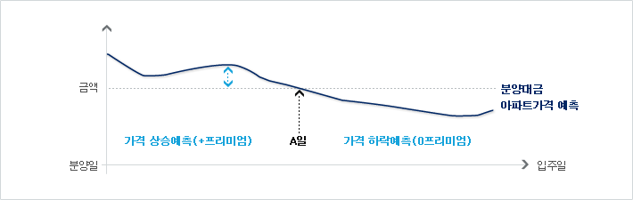

ELW 구조이해
옵션(OPTION) : 특정대상물을 미리 정한 가격으로 일정시점에서 사거나 팔거나 이익을 향유할 수 있는 권리
주식워런트(ELW) : 옵션을 증권화하여 주식처럼 매매할 수 있는 상품
옵션 가격 변수 : 기초자산의 가격, 행사가격, 만기기간, 무위험 이자율, 배당률, 기초자산의 변동성
ELW가 옵션을 주식처럼 투자할 수 있도록 증권화한 상품이라고 합니다.
상품 구조는 옵션이지만 매매는 주식투자처럼 한다는건데요. 그럼 옵션은 어떤 구조를 가지고 있는 상품일까요?
A : 좋아좋아 아파트 분양권에 프리미엄 1억이 붙었다는데, 그게 무슨 말이야?
B : 실제 그 아파트는 2년후에 입주하는 데 입주할 수 있는 권리가 분양권이고 그 분양권이 1억에 팔리고 있다는거지.
그러니깐 아파트 분양가가 3억이니까 2년 후 입주시점에서는 4억은 넘을 거라고 투자자들이 생각한다고 볼수 있어.
이런 분양권매매와 유사한게 옵션이라는 건데…
그렇습니다. 아파트 분양권을 산다는 것은 아파트 입주일 시점에서 분양대금을 납입하고, 입주할 권리를 사는 것을 말합니다. 이러한 분양권거래는 입주시점이 미래이기 때문에 그 기간동안 아파트가격의 변동이 예측되어 발생됩니다.

-
프리미엄으로 거래된다.
분양대금은 고정되어 있고, 분양권은 아파트가격예측에 따라 프리미엄이 붙어 거래됩니다.
즉, 화살표 크기만큼이 프리미엄이 되는거죠.분양일과 입주일 사이에는 프리미엄만 매수/매도자사이에서 결제가 일어납니다.
-
분양일 ~ A일 : + 프리미엄 거래
아파트가격이 분양대금보다 상승할 것이라는 예측이 반영되어 프리미엄은 (+)가 되어 분양권 매수/매도자사이에 활발한 거래가 이루어지는 시기입니다.
-
A일~입주일 : 0 프리미엄 거래
주택시장침체로 아파트가격이 분양대금보다 하락할 것이라는 예측이 반영되어 프리미엄은 0가 됩니다.
따라서 분양권 매수자는 부재하고, 투기목적으로 분양권을 매수한 사람들이 입주시점이 가까워오자 분양대금납입에 따른 부담감으로 매도세만 있습니다.
-
입주일 : 분양대금납입, 아파트입주
분양시점에서 약속한 금액인 분양대금을 납입하고, 아파트 입주할 권리를 행사하게 됩니다.
즉, 아파트에 입주하게 되면서 모든 거래는 종료하게 되죠.
요점정리
- 옵션에서는 아파트 분양권과 같은 권리 중 특정 시점에 살 수 있는 권리가 있는 하면 특정 시점에 팔수 있는 권리가 있습니다. 특정 자산을 특정 시점에 미리 정한 가격으로 살 수 있는 권리를 콜옵션이라고 하고, 팔 수 있는 권리를 풋옵션이라고 합니다.
- 주식워런트증권시장에서는 콜주식워런트증권(Call ELW)는 콜옵션, 풋주식워런트증권(Put ELW)은 풋옵션과 동일한 구조를 가지고 있습니다. 이미 옵션매매를 하고 계시는 고객이시라면 쉽게 ELW를 거래하실 수 있겠지만 그렇지 않은 분이시라면 Call ELW, Put ELW 의 상품 구조 및 손익분기점, 투자포인트 등 성공적인 투자를 위해 반드시 이해하셔야 합니다. 다음 장에서는 ELW를 사고 파는 기본 개념과 Call ELW 및 Put ELW의 구조에 대해서 말씀드리도록 하겠습니다.